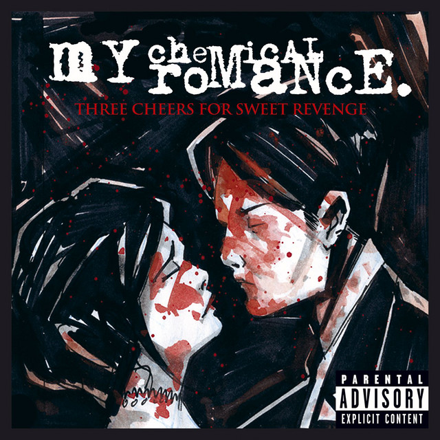
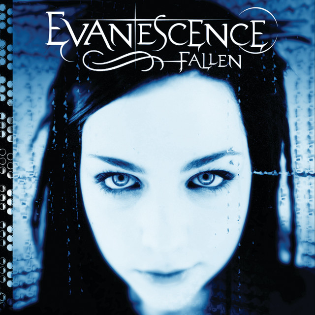
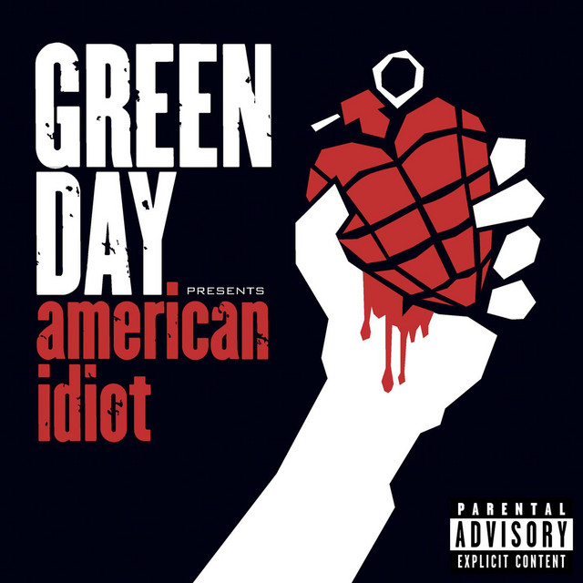

My Chemical Romance
The Black Parade
Three Cheers for Sweet Revenge é o segundo álbum de estúdio da banda de rock americana My Chemical Romance, lançado em 8 de junho de 2004.
Evanescence
Fallen
Fallen é o álbum de estreia da banda de rock norte-americana Evanescence, lançado em 4 de março de 2003.
Pierce The Veil
Collide With The Sky
Collide with the Sky é o terceiro álbum de estúdio da banda americana de post-hardcore Pierce the Veil, lançado em 17 de julho de 2012.
Avenged Sevenfold

Nightmare
Nightmare é o quinto álbum de estúdio da banda norte-americana de heavy metal Avenged Sevenfold, lançado em 27 de julho de 2010.
Linkin Park

Meteora
Meteora é o segundo álbum de estúdio da banda americana de rock Linkin Park, lançado em 25 de Março de 2003
Green Day
American Idiot
American Idiot é o sétimo álbum de estúdio da banda americana Green Day. O seu lançamento ocorreu em 21 de setembro de 2004